Red
El punto de partida es una VPC propia dimensionada para 500 hosts, con su Internet Gateway, tabla de rutas y subred pública. No se usó la VPC por defecto: definir la red desde cero permite controlar el direccionamiento y aislar los recursos.
La instancia recibe una IP elástica, de modo que la dirección pública sobrevive a los reinicios. Sin ella, cada detención del servidor cambiaría el punto de acceso y rompería cualquier configuración que dependa de él.
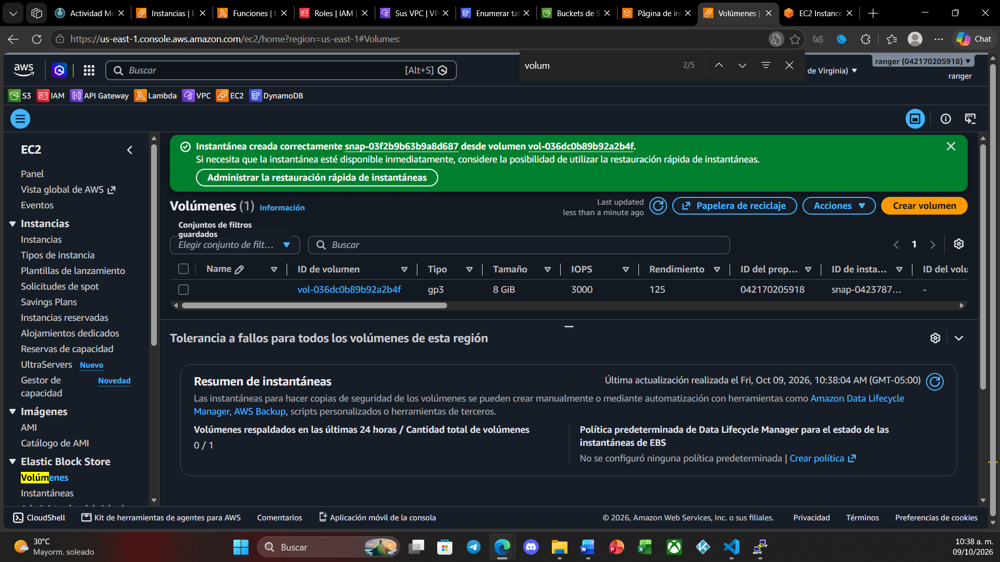
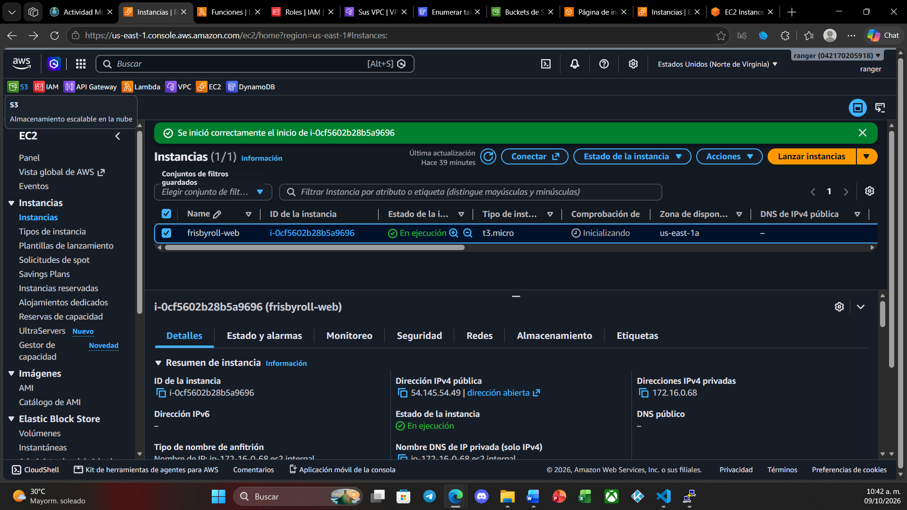
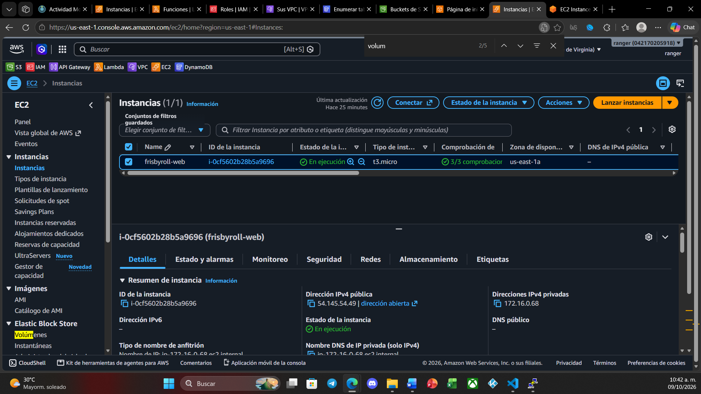
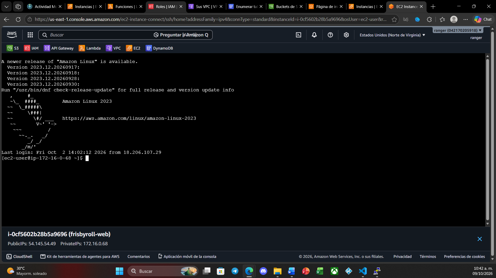
Cómputo y aplicaciones
Sobre la instancia EC2 configuré Nginx sirviendo dos aplicaciones web: una estática que consulta datos, y otra en Flask con sus dependencias de Python. El acceso administrativo se hace por EC2 Instance Connect y por PuTTY con llave, sin contraseñas.
Datos
La capa de datos son siete tablas en DynamoDB, consultadas tanto desde CloudShell como desde la aplicación web. El sitio resuelve cinco retos de consulta sobre esas tablas, desde búsquedas por clave de partición hasta filtros compuestos.
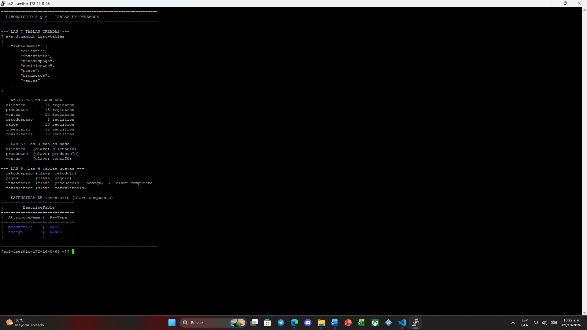
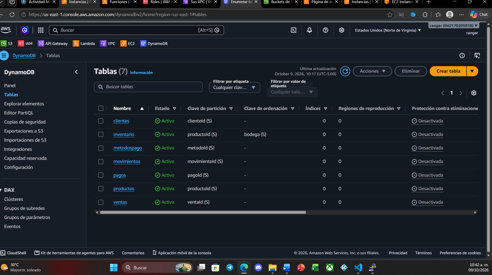
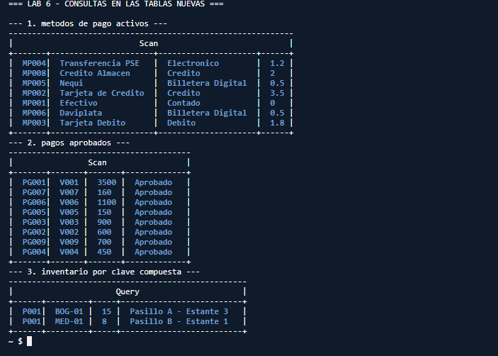
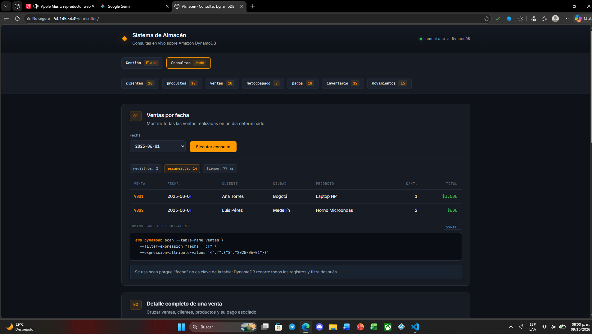
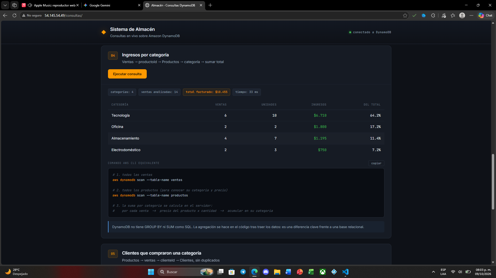
Serverless y automatización
Dos funciones Lambda cubren necesidades distintas. La primera genera URLs pre-firmadas para subir archivos a S3 sin exponer credenciales: el tipo y el tamaño del archivo viajan dentro de la firma criptográfica, de modo que el servidor no puede recibir algo distinto a lo autorizado aunque el cliente lo intente.
La segunda apaga la instancia según un horario, disparada por una regla de EventBridge. Es control de costos: una instancia encendida de noche y fines de semana consume sin dar servicio.
Todo el acceso entre servicios se resuelve con roles IAM de permiso mínimo —la Lambda solo puede detener instancias, el EC2 solo puede escribir en su bucket— en lugar de credenciales incrustadas en el código.
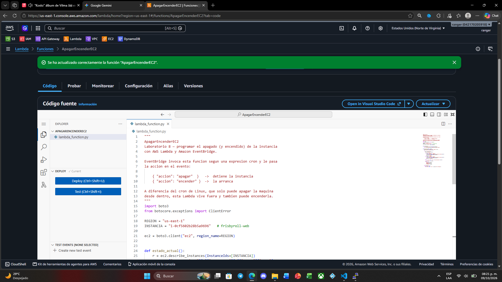
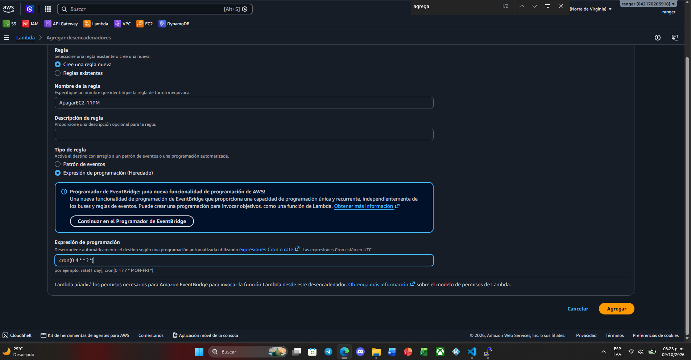
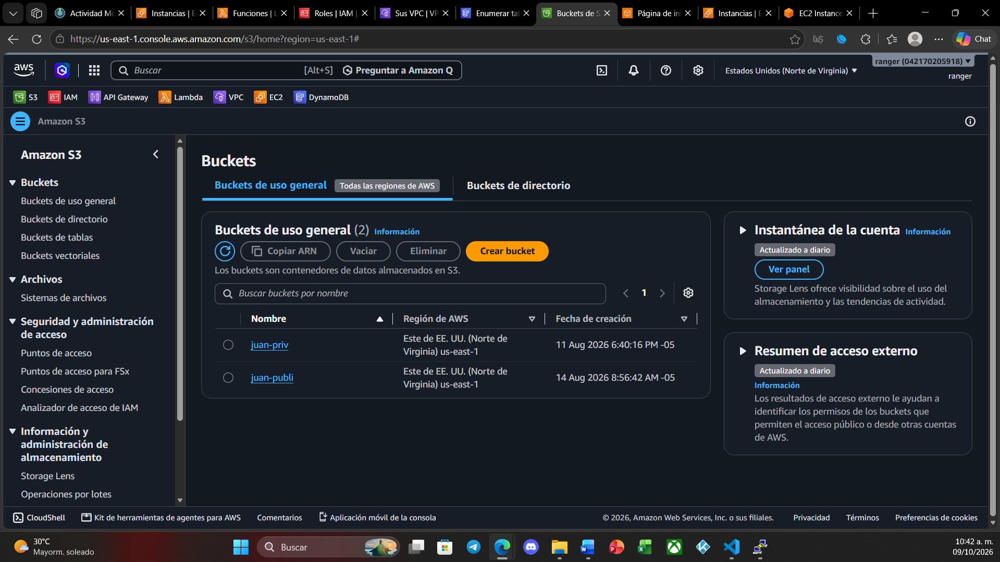